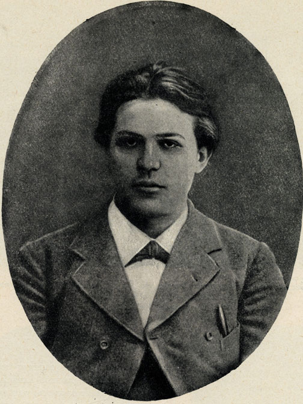
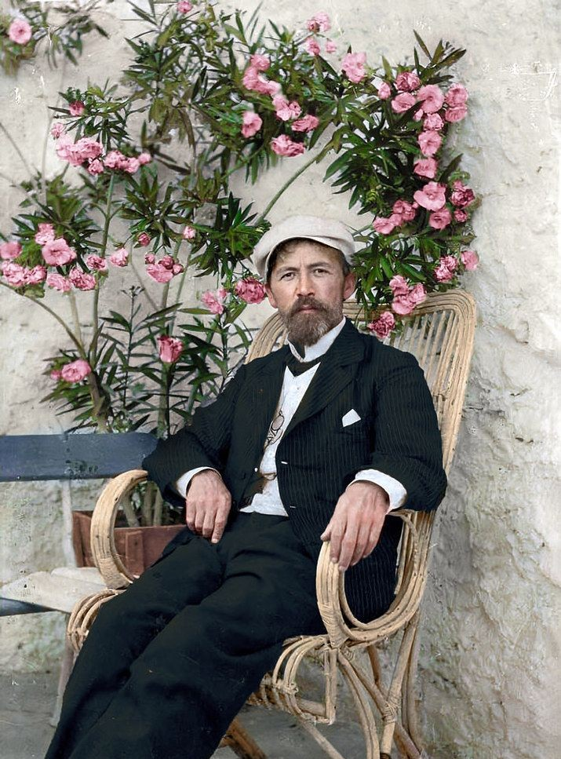

Anton Pavlovič Čehov jedan je od najznačajnijih ruskih dramatičara. Smatra se začetnikom psihološkog realizma u drami, ali i književnosti. Pisao je i kratke humoreske o otuđenim ljudima koje je društvena realnost izobličila. Fabule njegovih dela jednostavne su i bez velikih junaka i velikih zbivanja. Pisao je drame od komičnih jednočinki, a kasnije i od više činova. Čehov je uvelike uticao na razvoj moderne dramske književnosti.
Čehov je rođen 1860. u Taganrogu u Rusiji, kao treće od šestero dece. U rodnom gradu završio je osnovnu školu i gimnaziju. Već je tada počeo da se zanima za pozorište i književnost. U gimnaziji je počeo da uređuje školske novine i objavljuje svoje radove.
Nakon očevog bankrota, Čehovljeva porodica preselila se u Moskvu, ali on je ostao u rodnom gradu. Tada je napisao svoju prvu dramu Bez oca. Na žalost, ona je izgubljena i ni do danas nije pronađena.

Nakon srednje škole Čehov je otišao u Moskvu i upisao Medicinski fakultet. Nastavio je da objavljuje članke u studentskim časopisima, ali anonimno ili pod pseudonimom.
Za vreme studija napisao je dramu Platonov1. Medicinu je završio i radio je kao kotarski doktor, ali je pisanje ostalo njegova glavna strast.
1 Drama je izdana tek 1923. godine, dakle više od dvadeset godina nakon Čehovljeve smrti.
Radio je u Čikinu i tada objavio zbirku priča Melpomenine priče. Tada je Čehov prvi put obolio od tuberkuloze (TBC). Napisao je dramu Na glavnoj cesti i počeo da objavljuje tekstove u novinama.
1890. Čehov kreće na putovanja. Najpre je proputovao kroz Sibir, a onda krenuo na plovidbu Tihim i Indijskim okeanom. Sledeće godine zaputio se u zapadnu Evropu. Izdao je tada novele Dvoboj i Žena sa sela.
Kada je izbila kolera 1892. Čehov je besplatno lečio i najsiromašnije seljake, i sam se boreći s glađu. Tada je objavio priče Moja žena, Skakavica i druge, te dramu Jubilej.

Nakon što mu se i samom pogoršalo zdravlje, otišao je u Italiju i Francusku, objavivši djela Student, Na ladanju i druge. Opet je obolio od tuberkuloze, od koje se najpre lečio u Francuskoj. Tada je objavio nekoliko drama, među kojima je i poznata Ujka Vanja.
Tuberkulozu je nastavio da leči na Jalti. Njegova dela su već bila toliko obilna, da su sabrana činila 11 tomova. 1903. izdao je poslednja dela, među kojima je i njegov Višnjik.
Kazališta su tada počela da izvode njegove drame, iako su bila niskobudžetna i uglavnom za radničku klasu, ali unatoč tome, bivaju zabranjena.
Do tada se Čehovu zdravlje značajno pogoršalo. Otišao je u Njemačku na lečenje i tamo umro 1904. godine.